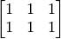
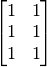

Appendix: Static TensorFlow¶
TensorFlow 1+1¶
Essentially, TensorFlow is a symbolic computational framework (based on computational graph). Here is a “Hello World” example of computing 1+1.
import tensorflow as tf
# Defince a "Computation Graph"
a = tf.constant(1) # Defince a constant Tensor
b = tf.constant(1)
c = a + b # Equal to c = tf.add(a, b)，c is a new Tensor created by Tensor a and Tesor b's add Operation
sess = tf.Session() # Initailize a Session
c_ = sess.run(c) # Session的run() will do actually computation to the nodes (Tensor) in the Computation Graph
print(c_)
Output:
2
The program above is capable of computing 1+1 only, the following program, however, shows how to use TensorFlow to compute the sum of any two numbers through the parameter feed_dict= of tf.placeholder() and sess.run():
import tensorflow as tf
a = tf.placeholder(dtype=tf.int32) # Define a placeholder Tensor
b = tf.placeholder(dtype=tf.int32)
c = a + b
a_ = input("a = ") # Read an Integer from terminal and put it into a_
b_ = input("b = ")
sess = tf.Session()
c_ = sess.run(c, feed_dict={a: a_, b: b_}) # feed_dict will input Tensors' value needed by computing c
print("a + b = %d" % c_)
Terminal:
>>> a = 2
>>> b = 3
a + b = 5
Variable is a special type of tensor, which is built using tf.get_variable(). Just like variables in common progamming language, a Variable should be initialized before used and its value can be modified during computation in the computational graph. The following example shows how to create a Variable, initialize its value to 0, and increment by one.
import tensorflow as tf
a = tf.get_variable(name='a', shape=[])
initializer = tf.assign(a, 0) # tf.assign(x, y) will return a operation “assign Tensor y's value to Tensor x”
a_plus_1 = a + 1 # Equal to a + tf.constant(1)
plus_one_op = tf.assign(a, a_plus_1)
sess = tf.Session()
sess.run(initializer)
for i in range(5):
sess.run(plus_one_op) # Do plus one operation to a
a_ = sess.run(a) # Calculate a‘s value and put the result to a_
print(a_)
Output:
1.0
2.0
3.0
4.0
5.0
The following code is equivalent to the code shown above. It specifies the initializer upon declaring variables and initializes all variables at once by tf.global_variables_initializer(), which is used more often in practical projects:
import tensorflow as tf
a = tf.get_variable(name='a', shape=[], initializer=tf.zeros_initializer) # Made initializer as a all zero initializer
a_plus_1 = a + 1
plus_one_op = tf.assign(a, a_plus_1)
sess = tf.Session()
sess.run(tf.global_variables_initializer()) # Initailize all the
for i in range(5):
sess.run(plus_one_op)
a_ = sess.run(a)
print(a_)
Matrix and tensor calculation is the basic operation in scientific computation (including Machine Learning). The program shown below is to demonstrate how to calculate the product of the two matrices  and :
import tensorflow as tf
A = tf.ones(shape=[2, 3]) # tf.ones(shape) defines a all one matrix with shape
B = tf.ones(shape=[3, 2])
C = tf.matmul(A, B)
sess = tf.Session()
C_ = sess.run(C)
print(C_)
Output:
[[3. 3.]
[3. 3.]]
Placeholders and Variables are also allowed to be vector, matrix and even higher dimentional tensor.
A Basic Example: Linear Regression¶
Unlike previous NumPy and Eager Execution mode, TensorFlow’s Graph Execution mode uses symbolic programming for numerical operations. First, we need to abstract the computational processes into a Dataflow Graph, and represent the inputs, operations and outputs with symbolized nodes. Then, we continually send the data to the input nodes, let the data be calculated and flow along the dataflow graph, and finally reach the specific output nodes we want. The following code shows how to accomplish the same task as the code does in previous section based on TensorFlow’s symbolic programming approach, where tf.placeholder() can be regarded as a kind of “symbolic input node”, using tf.get_variable() to define the parameters of the model (the tensor of the Variable type can be assigned using tf.assign()), and sess.run(output_node, feed_dict={input_node: data}) can be thought of as a process which sends data to the input node, calculates along the dataflow graph and reach the output node and eventually return values.
import tensorflow as tf
# Define data flow gragh
learning_rate_ = tf.placeholder(dtype=tf.float32)
X_ = tf.placeholder(dtype=tf.float32, shape=[5])
y_ = tf.placeholder(dtype=tf.float32, shape=[5])
a = tf.get_variable('a', dtype=tf.float32, shape=[], initializer=tf.zeros_initializer)
b = tf.get_variable('b', dtype=tf.float32, shape=[], initializer=tf.zeros_initializer)
y_pred = a * X_ + b
loss = tf.constant(0.5) * tf.reduce_sum(tf.square(y_pred - y_))
# Back propagation, calculate gradient of variables(model parameters) manually
grad_a = tf.reduce_sum((y_pred - y_) * X_)
grad_b = tf.reduce_sum(y_pred - y_)
# Gradient descent, update parameters manually
new_a = a - learning_rate_ * grad_a
new_b = b - learning_rate_ * grad_b
update_a = tf.assign(a, new_a)
update_b = tf.assign(b, new_b)
train_op = [update_a, update_b]
# End of defining of data flow gragh
# Attention, until now, we haven't do any actually data calculation, just defined a data flow gragh
num_epoch = 10000
learning_rate = 1e-3
with tf.Session() as sess:
# Initialize variables a and b
tf.global_variables_initializer().run()
# Put data in the data flow gragh created above to calculate and update variables
for e in range(num_epoch):
sess.run(train_op, feed_dict={X_: X, y_: y, learning_rate_: learning_rate})
print(sess.run([a, b]))
In the two examples above, we manually calculated the partial derivatives of the loss function with regard to each parameter. But when both the model and the loss function become very complicated (especially in deep learning models), the workload of manual derivation is unacceptable. TensorFlow provides an automatic derivation mechanism that eliminates the hassle of manually calculating derivatives, using TensorFlow’s derivation function tf.gradients(ys, xs) to compute the partial derivatives of the loss function with regard to a and b. Thus, the two lines of code in the previous section for calculating derivatives manually,
# Back propagation, calculate gradient of variables(model parameters) manually
grad_a = tf.reduce_sum((y_pred - y_) * X_)
grad_b = tf.reduce_sum(y_pred - y_)
could be replaced by
grad_a, grad_b = tf.gradients(loss, [a, b])
and the result won’t change.
Moreover，TensorFlow has many kinds of optimizer, which can complete derivation and gradient update together at the same time. The code in the previous section,
# Back propagation, calculate gradient of variables(model parameters) manually
grad_a = tf.reduce_sum((y_pred - y_) * X_)
grad_b = tf.reduce_sum(y_pred - y_)
# Gradient descent, update parameters manually
new_a = a - learning_rate_ * grad_a
new_b = b - learning_rate_ * grad_b
update_a = tf.assign(a, new_a)
update_b = tf.assign(b, new_b)
train_op = [update_a, update_b]
could be replaced by
optimizer = tf.train.GradientDescentOptimizer(learning_rate=learning_rate_)
grad = optimizer.compute_gradients(loss)
train_op = optimizer.apply_gradients(grad)
Here, we first instantiate a gradient descent optimizer tf.train.GradientDescentOptimizer() in TensorFlow and set the learning rate. Then use its compute_gradients(loss) method to find the gradients of loss with regard to all variables (parameters). Finally, through the method apply_gradients(grad), the variables (parameters) are updated according to the previously calculated gradients.
These three lines of code are equivalent to the following line of code:
train_op = tf.train.GradientDescentOptimizer(learning_rate=learning_rate_).minimize(loss)
The simplified code is as follows:
import tensorflow as tf
learning_rate_ = tf.placeholder(dtype=tf.float32)
X_ = tf.placeholder(dtype=tf.float32, shape=[5])
y_ = tf.placeholder(dtype=tf.float32, shape=[5])
a = tf.get_variable('a', dtype=tf.float32, shape=[], initializer=tf.zeros_initializer)
b = tf.get_variable('b', dtype=tf.float32, shape=[], initializer=tf.zeros_initializer)
y_pred = a * X_ + b
loss = tf.constant(0.5) * tf.reduce_sum(tf.square(y_pred - y_))
# Back propagation，calculate and update gradient of varaibles(model parameters) with TensorFlow's GradientDescentOptimier
train_op = tf.train.GradientDescentOptimizer(learning_rate=learning_rate_).minimize(loss)
num_epoch = 10000
learning_rate = 1e-3
with tf.Session() as sess:
tf.global_variables_initializer().run()
for e in range(num_epoch):
sess.run(train_op, feed_dict={X_: X, y_: y, learning_rate_: learning_rate})
print(sess.run([a, b]))